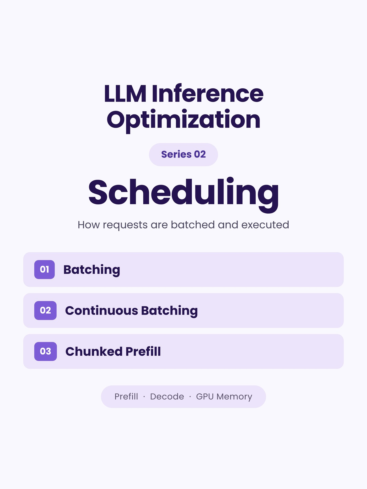
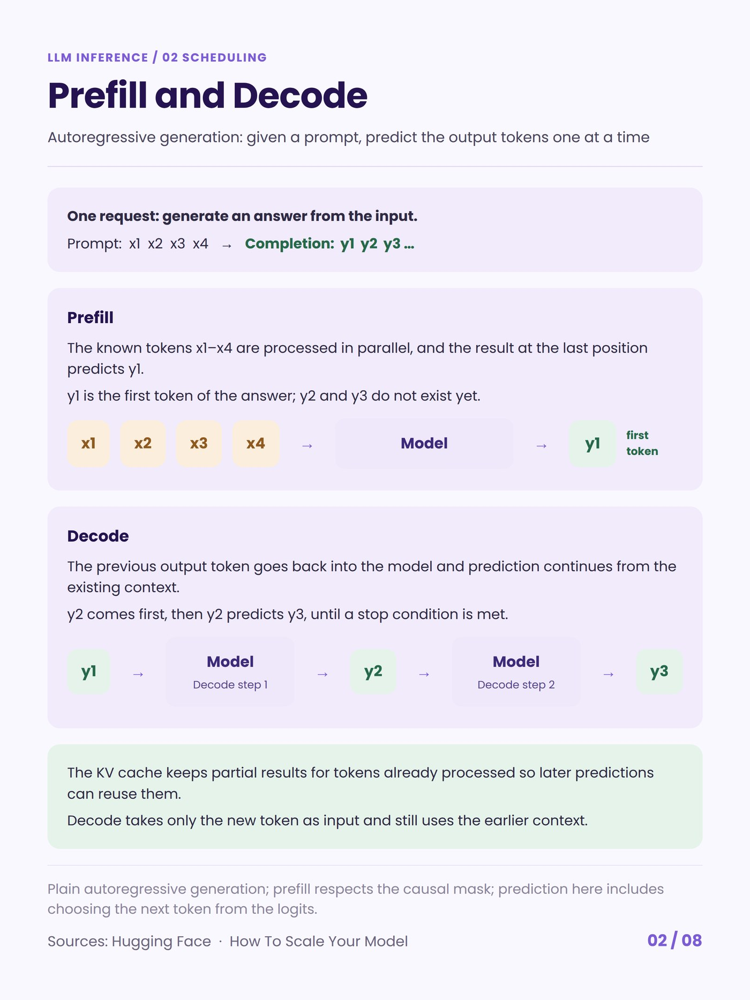
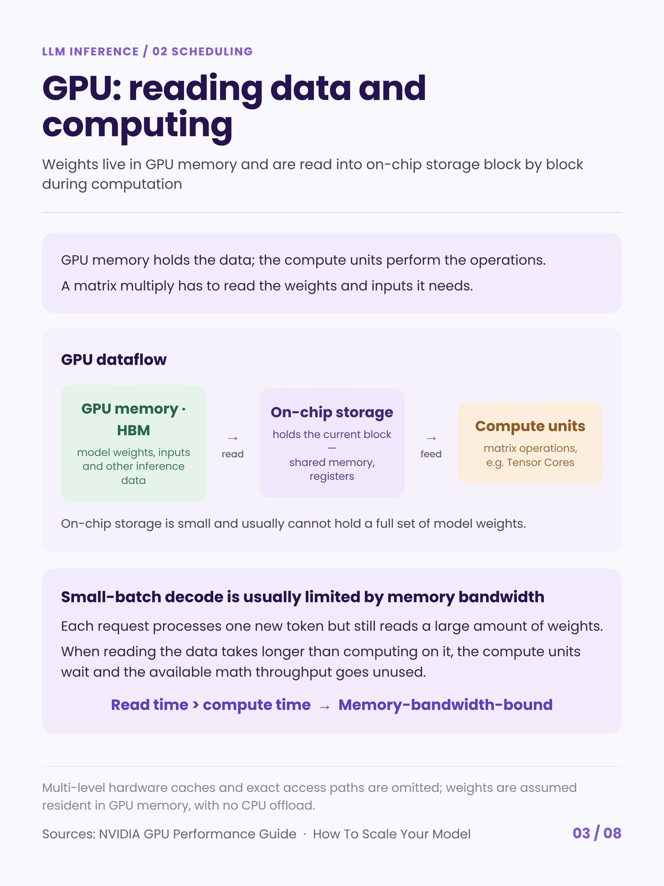
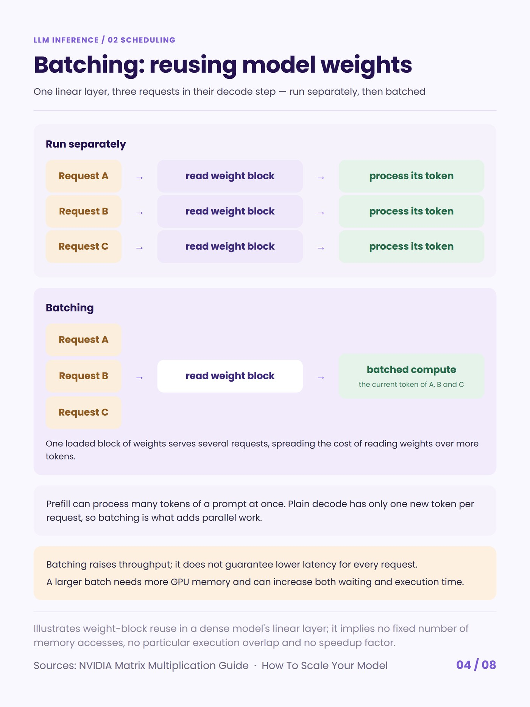
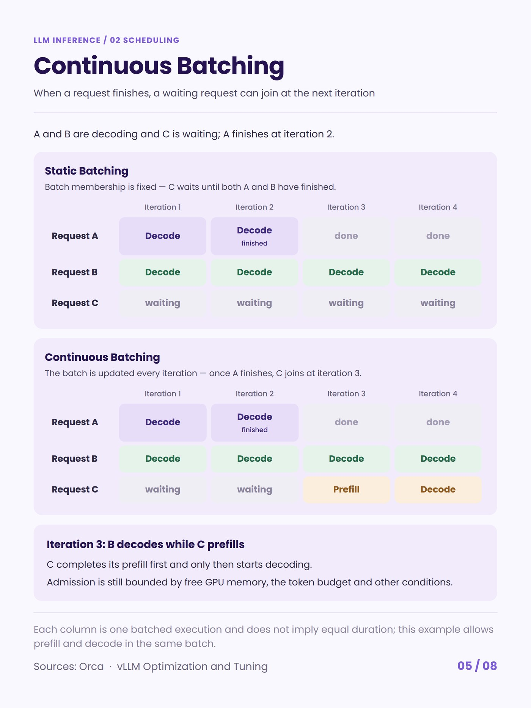
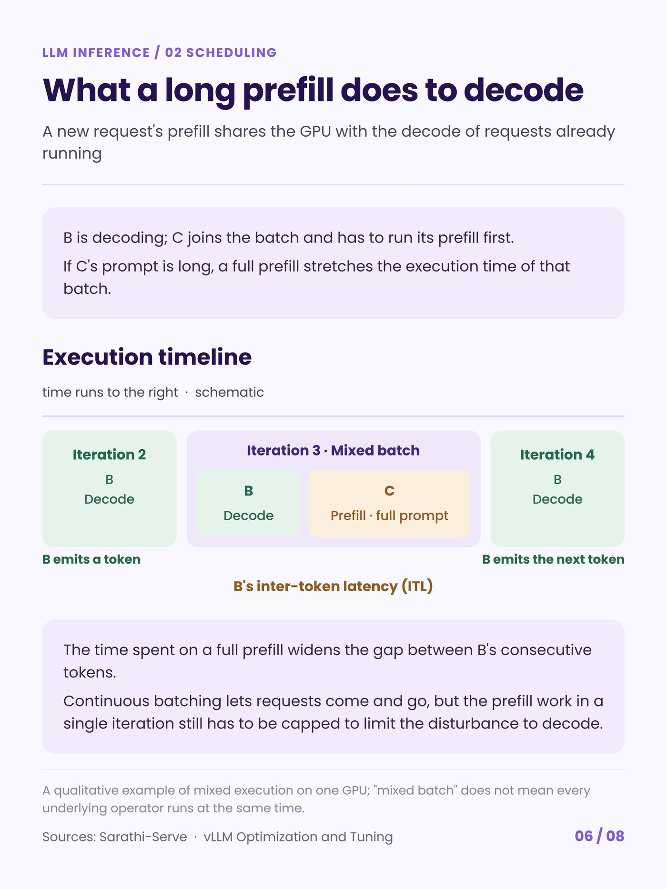
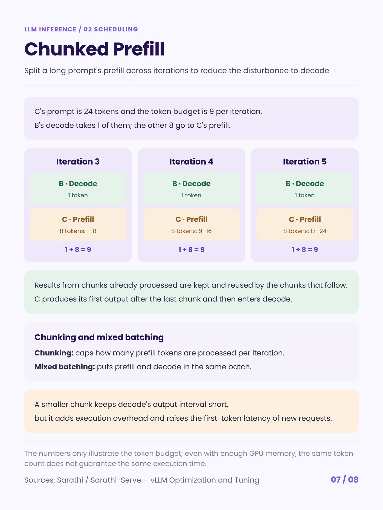
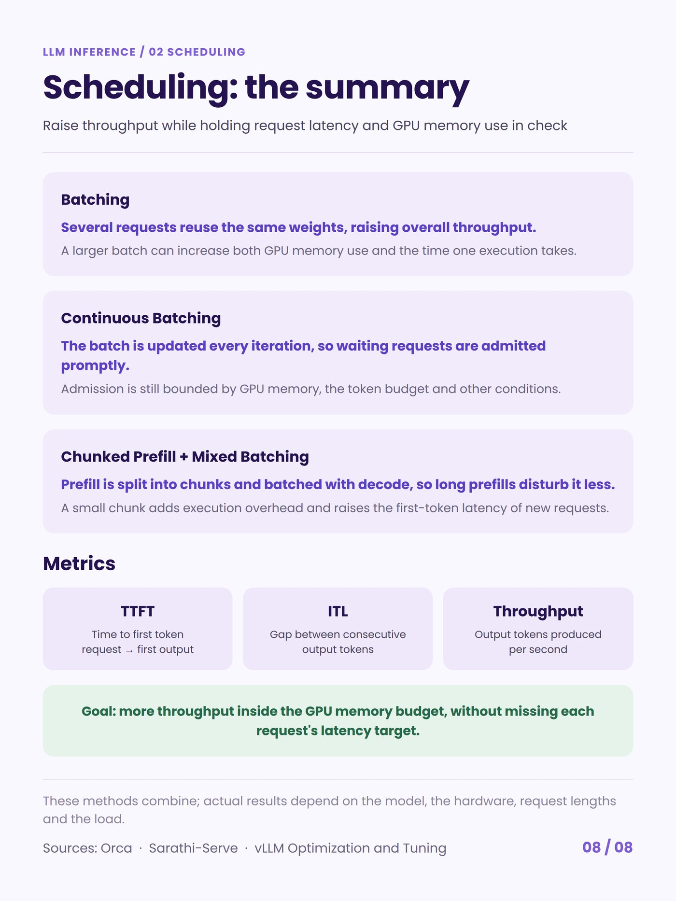

"Make inference faster" is not one problem. A serving stack loses time in six different places, and the technique that fixes one of them usually does nothing for the other five. This is a card series that goes through them one at a time — what the technique actually changes, and which number it moves.

02 · Scheduling
Scheduling is the one that needs no new kernels and no change to the model: it is only a decision about which requests run in the same forward pass. It also has the clearest trade — batching more requests raises throughput, and the requests already mid-generation pay for it in the gap between their tokens.
Three steps, in the order the ideas arrived: batching reuses one read of the weights across several requests; continuous batching lets the batch change every iteration instead of every request; chunked prefill caps how much prefill any single iteration can contain, so a long prompt joining the batch cannot stall everyone else's decode. The three numbers they trade against each other are TTFT, ITL and throughput.








What comes next
The remaining five: caching (the KV cache is a capacity problem, and paging is what stops fragmentation from eating the capacity), kernels and execution, quantization, speculative decoding, and parallelism with prefill–decode disaggregation — which is the multi-machine version of the same fight chunked prefill settles inside one GPU.